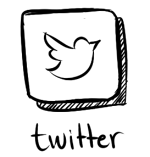
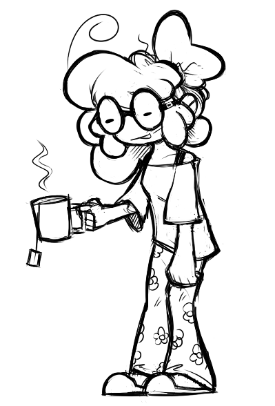
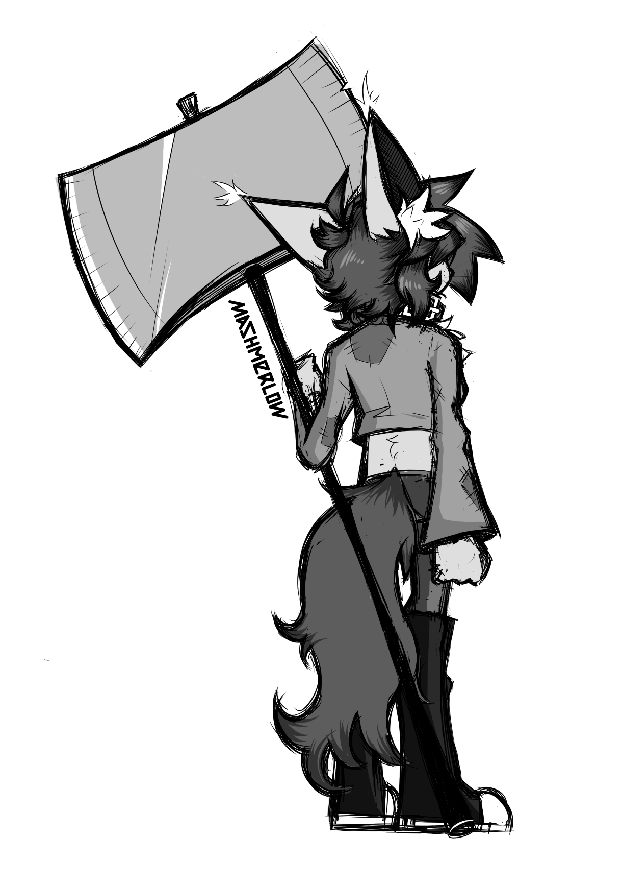

I post my art in these websites. Check them out!
I may also post some animations occasionally on my
YouTube account.
← Back to the home page
Want commissions? I can give you some!
Currently I'm only doing art commissions, but maybe in the future I might also open music ones.
Digital Art
I also have some Terms and Conditions that you should read before commissioning.
Just so that we're on the same page here!
Music
Currently closed. Sorry!
← Back to the home page
My name's Jade but online I usually go by
mashmerlow. I'm a digital artist and I mainly do character design, either for drawings or games and some work in paintings. I've also dabbled on some music writing. They're usually more chiptune oriented, but if I try hard enough, I can definitely write some more complex tunes.

← Back to the home page
I haven't been able to actually get one of my personal game projects out yet...
But that doesn't mean it won't happen!
Stay tuned...
← Back to the previous page
I've worked on some games with other people! Especially friends of mine.
Here's the list of all of the games I've worked so far:
← Back to the previous page